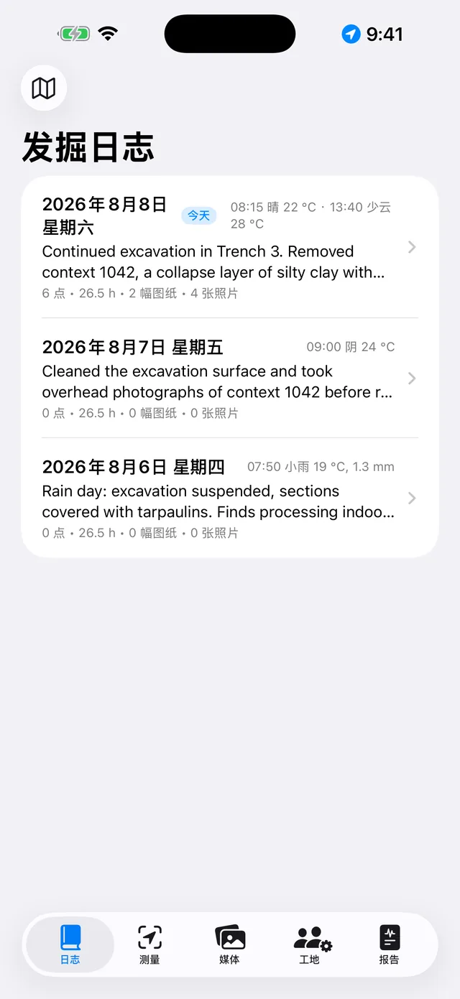
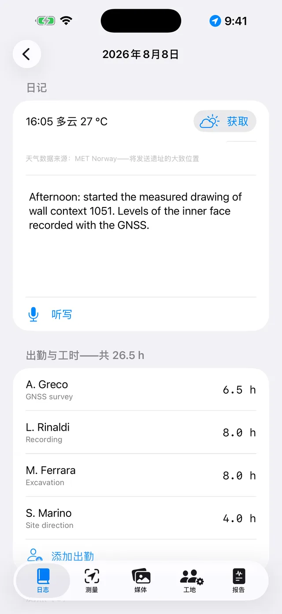
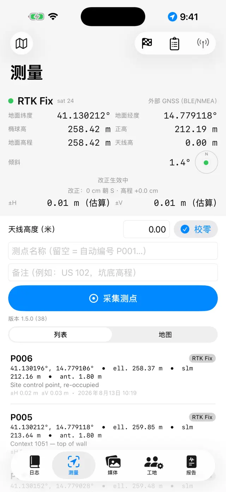
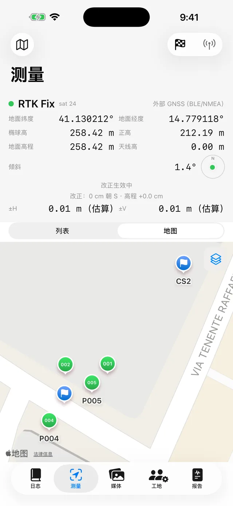
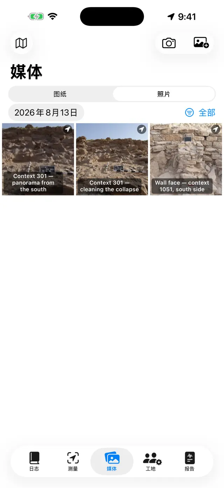
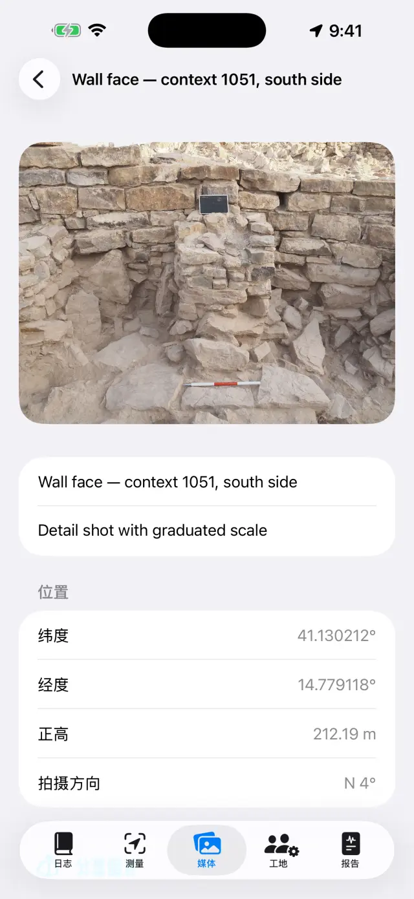
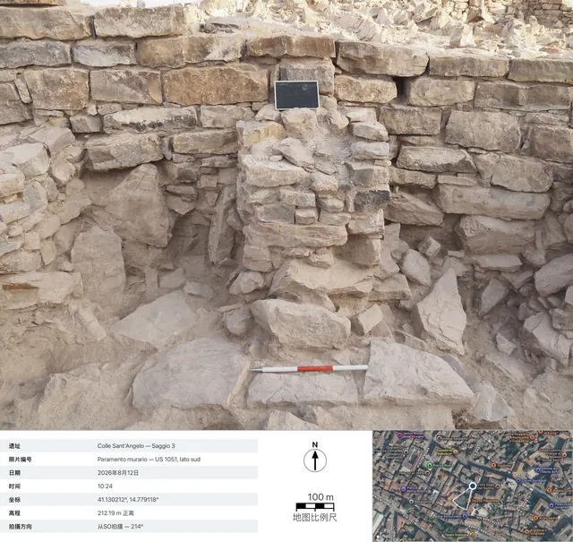

Italiano English Deutsch Español
Français Português Polski Română
Magyar Русский العربية 简体中文
日本語 한국어 Türkçe فارسی
Ελληνικά
Giornale di Scavo — 使用指南
iPhone 与 iPad 上的数字发掘日志。100% 离线：数据始终保存在设备本地。
简而言之
核心理念只有一个：每一个发掘日都是一页，会自动填充内容。你在哪里
记录，数据就出现在哪里——在「测量」中记录一个 GNSS 测点，在「媒体」中拍一张照
片，在「工地」记一笔工时——当天的这一页会在 日志 中自动把它们全部汇
总。到了周末，或发
掘结束时，报告会直接从这些页面自动生成。
典型的一天
- 早上打开当天的页面，记录天气和日记（也可以用 听写 说出来）
- 出勤在 工地 中登记在场人员和工时
- 测量采集 GNSS 测点；如果使用 RTK，先校核一个控制点
- 照片在 媒体 中拍照：坐标会自动附加
- 图纸在照片上描摹剖面图或平面图（数字硫酸纸）
- 晚上在 报告 标签页生成日报告：PDF 随时可以发送
快速上手
- 首次启动时，你会看到一个示例遗址。要创建自己的遗址，点击顶部的遗址名称
（🗺 图标）→ 新建遗址…，然后给它起个名字（例如“Colle
Sant'Angelo — 探方 3”）。
- 当前使用的遗址名称始终显示在顶部：所有标签页显示的都是该遗址的数据。要切换
遗址，再次点击名称即可：列表位于“你的遗址”标题下方，用 重命名遗址…
可以在不丢失任何内容的情况下更正名称。
- 在系统请求时授予相应权限：定位（用于测点）、相机（用于拍
照）、麦克风（用于听写）、蓝牙（仅在使用外部接收机时需要）。
五个标签页
📓 日志
- 点击某一天以打开它的页面：当天的日记、天气、出勤、测点、照片和图纸都已经在
那里了。
- 写下日记，或点击 听写 说话：转写在设备本地进行，没有网络也能使
用。
- 天气可以手动填写（例如“晴，28 °C，微风”），也可以点击 获取 自动
获取，此时会向挪威气象局查询当前的天气状况。这需要网络连接，并且只对今天的页面
有效：昨天的天气已经无法再取回。下午再次点击会追加一条记录。手动填写的内容始终
优先。
- 获取天气时，发送出去的只有精度约为 11 米、经过模糊处理的区域位置，报告中这
一行会使用报告所选择的语言显示。

发掘日列表
某一天的页面📍 测量
- 顶部面板显示实时位置：坐标、高程、精度以及 Fix 类型（GPS / RTK Float / RTK
Fix）。
- 如果使用对中杆，请设置 天线高度（米）：测点的高程会自动换算到地
面。
- 点击 采集测点。名称会自动编号（P001、P002……），但你也可以自己
输入一个名称（例如“US 102——坑底高程”），并添加备注。
- 在 列表 和 地图 之间切换，可以看到测点在现场的位置；
在地图上可以启用地籍图或其他 WMS 服务。
- 控制点（🏁）有自己的板块：可以从 CSV 导入，也可以手动创建，然后打开
实时校核，把对中杆尖立在标钉上，在开始测量之前实时查看
Δ北/Δ东/Δ高程 的偏差。
- 在 水准手簿 下面是光学水准仪的野外记录簿：测站、后视和前视读
数、从起始控制点算出的高程，并带闭合校核。用水准测量得到的点会带着自己的高程
进入遗址，和 GNSS 测点一样。
- 面板下方是 NMEA 记录：外部接收机 PRO
的原始数据流会自己写入文件——打开天线时开始记录，关闭天线时结束，不需要你专
门记着这件事。它可以用来复查有疑问的一天，或者把原始数据交给做后处理的人。这
些文件可以分享，也可以删除，正在记录中的那个除外；即使接收机已经关闭，列表也
照样能打开，所以昨天的文件始终触手可及。

「测量」的 GNSS 面板
地图上的测点与控制点每个测点都会同时保存两种高程：椭球高和正高。使
用手机内置 GPS 时，正高可能无法获取：这时需要一台外部接收机（见下文）。
📷 媒体
- 使用相机按钮拍照，或从相册导入。
- 照片会自动按顺序命名（F001、F002……），并使用最近一次可用的 GNSS 位置进行
地理定位。
- 拍摄时应用还会记录来自罗盘的拍摄方向：在照片详情和报告中
会看到“从SO拍摄 — 214°”这样的文字；对于垂直俯拍的照片（平面图、某个 US 的底
部），则是带有上边朝向的俯拍说明。如果罗盘受到干扰，应用会提示你。
- 点击一张照片可以添加标题和备注（例如“US 102，北向拍摄”）。
- 分享资料卡 PRO 会生成照片资料
卡：照片下方附有拍摄数据（遗址、编号、日期和时间、坐标、高程、方
向），一张带有定位图钉和拍摄方向扇形的卫星视图，地图比例尺条，以及指北箭头。
地图部分需要网络：没有网络时资料卡依然会生成，只是数据面板会相应放大。

照片图库
照片详情：坐标、高程和拍摄方向
导出的资料卡：拍摄数据、带拍摄方向扇形的卫星视图、地图比例尺条和指北箭头✏️ 图纸（在媒体中）
- 创建一张新图纸，并选择一张遗址照片作为背景：这就是你的数字硫酸纸。图纸可以
跨越多个发掘日继续绘制。也可以不放照片：在空白的硫酸纸上照样能画。
- 用手指或 Apple Pencil 描摹地层、切割面和石块。用两指捏合缩放
（最高 6×，双指双击可回到 1×）。如果照片盖住了笔迹，可以在相机菜单中选择
背景不透明度…，把它调到合适的程度，从 5% 到 100%：变淡的是照片，
不是图纸。这个设置会保留在这张图纸上，并且在 PDF、DOCX、PNG 以及
导出（含图例） 中同样有效。
- 其余的一切都在 工具（工具栏中的扳手图标）里，它是六种模式的目
录：文本框、描摹 PRO、
照片比例尺、已知高程的点、图案填充 和
线条样式。同一时间只能启用其中一种：对勾表示当前
是哪一种，只要它处于启用状态，手指就不再绘制，而是操作那个工具——想要重新绘
制，再次点击已打勾的那一项即可。其中作用于图像的三项（描摹、比例尺、已知高程
的点）只有在存在背景照片时才会出现。
- 用 文本框 添加标注（例如“US 1002”）：可以移动、用捏合手势调整
大小，并可以在四种字体中选择。
- 描摹 PRO 会识别你点触的对象的轮廓
（一块石头、一层地层的边界），并把它变成线条：颜色、粗细和线型都可以直接更
改，无需退出该模式，而且轮廓是平滑的，不再是锯齿状。整个过程都在设备本地完
成，无需联网。
- 在描摹模式里，全部描摹 PRO 会自己把整
张照片跑一遍。在启动面板中选择呈现方式——仅轮廓，或者一种图案填
充，也可以再加一层 颜色底层——然后点击 开始：进度条会
告诉你进行到哪里，通常需要几十秒。出现的结果是预览，还不是图
纸：在某个形状内点一下就把它排除，再点一下又把它加回来（形状重叠时，手指下面
最小的那个优先），精细遍历 只在此前什么都没找到的地方再跑一次，
应用 则把留下来的内容放到图纸上。只要还没应用，图纸就不会被改
动。
- 用 照片比例尺（标尺）工具，点击一段已知长度的两个端点——例如
标杆上的一段——然后输入真实距离：照片就获得了比例尺，此后所有导出结果都以米
为单位。
- 用 已知高程的点，可以把遗址中某个 GNSS 测点（或手动输入的点）
的十字标记放到照片上：名称、高程和坐标会显示在一个带引出线、可拖动的标签中。
当数值挡住图纸时，可以在选中的标签上捏合，把它缩小或放大。
- 图案填充 用来给形状填色：在一个闭合形状的内部
点一下，它就被填满。共有十种约定图案——砌体／石、砖、
砂浆／抹灰、黏土、粉砂、砂、
砾石、木炭／灰烬、基岩、木——以及
颜色底层（带自身不透明度的颜色），可以单用，也可以叠加。如果一个形
状套在另一个里面，手指下面最小的那个优先；移除填充 可以把它清除。
不需要照片：填充作用于画出来的形状，因此在空白的硫酸纸上同样有效。
- 线条样式 给已经画好的线条换装：点一下它，然后
在 实线、虚线、点线 和 点划线 之间
选择，并调整粗细。用此样式绘制 会让之后画出的线条一开始就带上这种
样式；移除样式 则把线条恢复为实心。这不是屏幕上的显示效果：那些短
划是真正的线段，在 PDF、DOCX、PNG、SVG 和 DXF 中都保持不变。
- 导出（含图例） PRO：图片下方会附带一
条白边——如果设置了比例尺，就有比例尺条；对于垂直俯拍的照片显示指北箭头；对
于正面拍摄的照片则显示“从……拍摄”字样。
- 导出矢量图 PRO：SVG 用于图纸，或者
DXF 用于 GIS。在垂直俯拍的照片上至少放置两个间隔较开的带坐
标的已知高程点，DXF 就会以 UTM 完成地理配准并在 QGIS 中自
动定位到世界正确的位置；如果只有比例尺，则以本地米为单位导出；如果两者都没
有，应用会告诉你，并且不会生成没有单位的文件。在不透明度这件事上，SVG 是个例
外：它把原始照片原封不动地嵌了进去，因此在 SVG 里，调淡过的背景仍然是全强度
的。
- 完成后隐藏照片：留下干净的图纸，可以直接用于报告。
👷 工地
- 登记当天的出勤情况：每个人的姓名、工种和工时。
- 维护设备清单以及各件设备的分配对象。
📄 报告
- 选择类型：日报告（免费，带水印）、周报告、
月报告，或包含完整附录的最终报告
PRO。
- 报告语言可以从十七种中选择，与应用界面所用的语言无关：即
使应用界面使用简体中文，报告也可以用德语生成。
- 生成 PDF，或者导出带有标志和照片的 DOCX PRO、测点
的 CSV，以及用于 QGIS 的 GeoJSON PRO。
- 当报告中启用了照片选项时，你可以选择用资料卡替代照片
PRO：每张照片都会以带完整数据和地图的记录卡形式进
入 PDF 和 DOCX，并使用报告所选的语言。
外部 GNSS 接收机与 NTRIP
使用外部接收机（厘米级天线），应用可以达到 RTK 精度。内置 GPS 始终作为备用方
案保留可用。
- 打开接收机电源，并启用手机的蓝牙。
- 在 测量 中选择定位来源：外部 GNSS（BLE/NMEA）
PRO，然后从列表中选择你的接收机。同时也支持 MFi 接收
机（免费）以及通过网络发布 NMEA 数据的接收机。
- 如需 RTK 改正数据，请配置 NTRIP：Caster 地址、端口、
Mountpoint、用户名和密码（会保存在设备的钥匙串中）。应用会将位置发送给 Caster
并接收改正数据。
- 等待状态切换到 RTK Fix：厘米级精度。开始之前先在一个控制
点上做校核。
在手机没有信号的地方，还有一条不用互联网的
路：一台架设在已知点上的基准站和一台流动站通过 LoRa 电台交换
改正数据，既不需要 Caster，也不需要 SIM 卡（带 ESP32 桥接的 DFRobot RTK 套
件）。对应用来说没有任何区别——它从接收机收到的本来就是已经改正过的 NMEA
——桥接部分的组装另有文档，写在它自己的 README 里：这里是应用的使用指南，不
是固件手册。
备份与交换
- 在遗址菜单中点击 导出遗址（.zip）：里面包含了一切——日志、测
点、照片、图纸、工时、控制点。
- 把这个 ZIP 文件保存在任何你喜欢的地方（文件、Drive、邮件……）。这就是你的
备份：应用刻意不提供云端存储。
- 导入遗址（.zip）… 可以在另一台设备上重新创建该遗址，甚至可以在
iPhone 和 Android 之间互相导入。
⚠️ 删除遗址… 会删除该遗址及其全部内容，此操作
不可撤销：如果不确定，请先导出一份 ZIP。
免费版与 Pro
| 免费 | Pro |
|---|
| 遗址 | 1 | 不限 |
| GNSS | 内置 GPS、MFi 接收机 | + BLE/NMEA、NTRIP |
| 报告 | 带水印的日报告 | 全部类型，无水印 |
| 导出 | PDF、CSV | + 带标志和照片的 DOCX、GeoJSON |
| 图纸 | 硫酸纸、缩放、文字、比例尺、已知高程的点、图案填充、线条样式、背景不透明度 | + 导出（含图例）、SVG/DXF |
| 自动描摹 | — | 点触描摹与「全部描摹」 |
| NMEA 记录 | 重读并分享文件 | 记录本身（需要外部天线） |
| 水准手簿 | ✓ | ✓ |
| 照片资料卡 | — | 分享，以及报告中的资料卡 |
| 语音听写 | ✓ | ✓ |
| 报告语言 | 17 | 17 |
Pro 是按月或按年自动续订的订阅，也可以选择一次性买断的终身版本。可以随时在
Apple ID 设置中进行管理或取消。
常见问题排查
蓝牙接收机没有出现，或无法连接
请依次检查：
- 接收机已开机，并且没有连接到其他应用或其他手机；
- 系统蓝牙已开启，且应用已获得蓝牙权限（设置 → Giornale di Scavo）；
- 在「测量」中选择的定位来源是 外部 GNSS（BLE/NMEA）；
- 关闭并重新打开接收机，然后再次搜索。
始终无法达到 RTK Fix
- 需要一个有效的 NTRIP 连接：检查 Caster、Mountpoint 和凭据。
- 检查手机的数据网络覆盖：改正数据通过互联网传输。
- 开阔的天空很重要：茂密的树木和附近的墙壁会削弱信号。信号较差时可能会一直
停留在 RTK Float（分米级）。
- 选择一个距离较近的 Mountpoint（< 30–40 公里）或使用 VRS 网络。
NTRIP 无法连接
- 检查地址和端口（通常是 2101），并确认 Mountpoint 确实存在：许多 Caster 会
公开列表（sourcetable）。
- 用户名或密码错误会导致 401/403 错误：请重新检查凭据。
- 部分网络要求发送位置信息（GGA）：应用会自动完成，但前提是接收机已经获得了
一个 fix。
正高为空或为零
手机的内置 GPS 只能提供椭球高。正高来自外部接收机的 GGA 语句。如果没有接收
机，测点仍然会保存椭球高。
听写功能不起作用
- 检查设置中的麦克风和语音识别权限。
- 转写在设备本地进行：首次使用时系统可能需要下载语言模型（只需一次网络连
接，之后就可以离线使用）。
- 用简短的句子说话；文字会添加到日记的末尾。
地籍图（WMS）无法显示
应用本身是离线的，但 WMS 图层属于网络服务：需要网络连接以及一个可用的服
务。意大利的地籍图已经预先配置好；对于其他国家，请输入该国官方服务的 WMS 端点
（必须支持 EPSG:3857）。在没有网络覆盖的地方，底图和测点仍然可以正常显示。
照片没有坐标
照片的位置来自最近一次的 GNSS fix：请先打开「测量」，等待位置锁定后再拍
照。如果拒绝了定位权限，照片会以没有坐标的方式保存。
报告中缺少照片或标志
报告中的照片、标志和自定义页眉都是 Pro 功能，同时适用于 DOCX 和 PDF。免费版
的日报告带有水印，且不包含照片。
误删了一个遗址
删除是最终操作：数据无法恢复（不存在云端备份）。如果你之前导出过 ZIP，可以
导入它，将遗址恢复到那个时间点的状态。建议：每天结束时导出一份 ZIP。
已经购买了 Pro，但仍然显示锁定
在 Pro 页面点击 恢复购买，并使用购买时所用的同一个 Apple ID。如
果更换了设备，恢复操作会找回订阅或终身授权。
「获取」显示为灰色，或提示「天气数据不可用」
- 如果按钮是灰色的，说明你正在查看过去某一天的页面：天气只能在今天的页面上
获取；
- 如果出现「天气数据不可用」，说明没有网络，或者该遗址还没有可用来获取位置
的 GNSS 测点——先采集一个测点，然后再试一次。
照片资料卡没有地图
卫星视图数据来自 Apple，需要联网：应用最多等待 15 秒，然后生成没有地图的资
料卡（数据部分不等待网络）。在工地网络较慢的情况下，可能需要等满这段时间：请
在 Wi-Fi 下重试。如果照片没有地理标记，地图本来就不会出现。
「全部描摹」什么都没找到，或者找出太多
- 这一遍是在背景照片上进行的：没有照片就没有这个命令，而且只要还显示着
「正在准备照片…」，模型就还没准备好——请等一等；
- 如果找到的形状太少，点击 精细遍历：它只在第一遍什么都没看到的
地方用更密的网格再跑一次，把新找到的加进来，而不会把你排除掉的又放回去；
- 如果形状太多，不要全部应用：在预览里逐个点击多余的形状把它们排除，然后点
应用。被排除的不会进入图纸；
- 平淡的照片——对比度低、正午的光线、颜色一致的土层——本来就给不出多少轮
廓：这时更适合单点触描摹，因为它知道你在看哪里；
- 如果结果满是细碎的小形状，改用 仅轮廓 再试一次：这样更容易看
清，图案填充随时可以事后手工补上。
线条不肯换样式
- 点触会在一个指尖大小的半径内寻找最近的线条：如果线条很细或者很密，请先
放大，再对准墨迹本身点得更精确一些；
- 只有线条才能换样式。填充、文本框和已知高程点的十字标记都
不是线条，在手指下不会有反应；
- 如果出现「无法更改此线条的样式」，说明这一下点到的线条里有一条并不是线：
可能是手指停住时留下的一个点，也可能是从导入的档案里带进来的损坏笔迹。删掉那
个点再试，或者在离它较远的位置点这条线。单独一个点本来就换不了样式：用一个点
是做不出虚线的；
- 如果在点触和 应用 之间你撤销过，或者又画了别的东西，选择会自行
解除，以免给错误的线条换装：请重新点一下这条线再试。
在形状内部点击，图案填充却没有出现
- 形状必须是闭合的，而且要由一笔闭合：从一
点出发，手指不抬起地回到几乎同一点（几毫米的差距是允许的）。两条端点相碰的线
仍然是两条断开的线，而越过一条谁也没画过的边界去填满整张图纸，比不填更糟
糕；
- 描摹 生成的轮廓天生就是闭合的：这些总是可以填充；
- 如果形状彼此嵌套，点击会取包含这一点的最小形状——想填充
大的那个，请点在所有小形状之外的位置；
- 你点的是形状内部，而不是它的边线吗？目标是面，不是线。
DXF 被拒绝，或在 GIS 中显示在“靠近原点”的位置
- 要生成已地理配准的 DXF，需要一张用应用相机垂直俯拍的照
片，以及照片上至少两个间隔较开的带坐标的已知高程点；
- 只有标杆比例尺时，DXF 会以本地米为单位导出：这是正确
的，但 GIS 会把它显示在靠近原点的位置——应用会提前告诉你；
- 既没有比例尺也没有点时，导出会被拒绝：没有单位的 DXF 在任何 GIS 中都无法
被有意义地读取。
我把背景调淡了，可导出的 SVG 里照片还是全强度的
就是这样，而且会一直这样：SVG 把照片的原始文件整个带了进
去，而不是一份调淡后的副本，要把它调淡就意味着重新压缩——也就是让所有打开
SVG 做后续工作的人都拿到更差的图。背景不透明度… 在编辑器里，以及
在 PDF、DOCX、PNG 和 导出（含图例） 中都有效。如果你需要不带照片的
矢量图，请选择 SVG — 仅图形；如果你需要调淡过的照片，请导出 PNG，
或者走报告这条路。
指北箭头没有出现在含图例的导出中
箭头只会出现在用应用相机垂直俯拍的照片上，因为这类照片会
在拍摄时记录方位角。正面拍摄的照片会显示“从……拍摄”的文字（在立面图的平面上
放一个指北箭头，在几何上就是一种误导）；从相册导入的照片则两者都不会出现，因
为缺少拍摄数据。